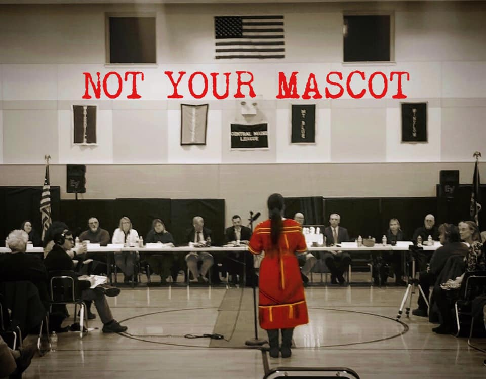

2020-03-11 08:00

One of the justifications that supporters of the Dartmouth mascot give for "defending" it is that choosing something else would result in the "erasure" of Native Americans and Native American history. This is a view echoed by one Dartmouth school committee candidate who wrote on her Facebook page: "Our local Aquinnah Wompanoag [sic] Tribe was up against cancel culture." The candidate's other platform? "Helping our schools create and maintain a wholesome, safe, environment, [...] get beyond race, [...] oppose indoctrinating children [...] to think a certain way about controversial topics."
This is in a town that can't even agree on the wording of an historical sign near a place where indigenous people were sold into slavery.
Part of the problem is the schools themselves. Dartmouth has a woeful track record of teaching indigenous history. One 2020 high school graduate wrote, "In my four years of being an Indian, I only was exposed to the mascot in connection to the white people wearing the uniforms." Dartmouth School Superintendent Gifford seemed to confirm this, noting that students are taught indigenous history "primarily" in the 3rd grade. One AP History competition called the "Colonial Real Estate Agency Project" involved students trying to "attract more settlers to your region of the colonies [...] persuade your European audience to migrate."
So if indigenous history is not being taught in the schools, then precisely what history is being erased? Are football teams the only way to remember indigenous people? And if a mascot is a stand-in for history education, what is the mascot actually teaching kids?
There were plenty of answers to these questions at a school committee meeting on March 8th.
Three years ago the Dartmouth School Committee voted 3-2 against holding community hearings on the mascot. But the issue refused to go away, partly because of state legislation to restrict native mascots. So the Committee formed a "Diversity subcommittee" to look at curriculum and they threw in the mascot, which otherwise would have suffocated in the thin air of neglect. March 8th was the subcommittee's best work.
The leadership of the Aquinnah, pressing hard at both school and town level for exclusive representation on indigenous issues and exclusive control over the "Indian" logo, attacked the subcommittee, calling its members "outsiders," a view echoed by ultraconservatives both within and close to the leadership. It was only thanks to the Committee chair, Dr. Shannon Jenkins, and other level heads that Wampanoag tribes other than the Aquinnah received invitations to be heard.
And was it ever enlightening.
For years we have heard that the mascot "honors" Native Americans. Pushing back on that narrative, Mashpee Wampanoag members Dawn Blake Souza, Shawna Newcomb, and Brian Weeden; Pokanoket Wampanoag council member Megan Page; and Aquinnah Wampanoag member Brad Lopes explained in thoughtful detail why mascots and symbols -- even if historically accurate -- harm indigenous people nevertheless.
For years we have heard that no one is offended by mascots, that only "woke" crybabies and "outsiders" want to "cancel" the Dartmouth mascot. There was plenty of testimony on March 8th to lay that one to rest.
And for years we have heard that retiring the mascot would "erase" history -- a laughable assertion from folks who refuse to acknowledge real erasure: genocide, ethnic cleansing, and enslavement of indigenous (and other) people, some right in our own backyard.
Brad Lopes, who spoke for Aquinnah members opposing mascots, provided a perfect example of why "erasure" is a demonstrably false narrative:
"Yesterday was the three-year anniversary of the ban of mascots in the state of Maine. And the Wabanaki people are still here. They do not need a mascot to represent them. They do not need a symbol. They do not need an image. They are still here. And their culture and history are brought directly into the classroom because of LD.291, which is a state law that requires schools to teach Wabanaki history. That is how you provide some sort of honor to native peoples, some sort of respect, as you will actually form authentic relationships. [...] I would encourage you all to move away from any narratives that have to do with "erasure" [...] A symbol is not the solution, education is. This is something I want you all to strongly consider."
David Ehrens is a Dartmouth resident and one of the founding members of The New Bedford Light. The Light is a nonprofit, non-partisan community news organization, and donors. sponsors and founders do not exercise any influence over content.